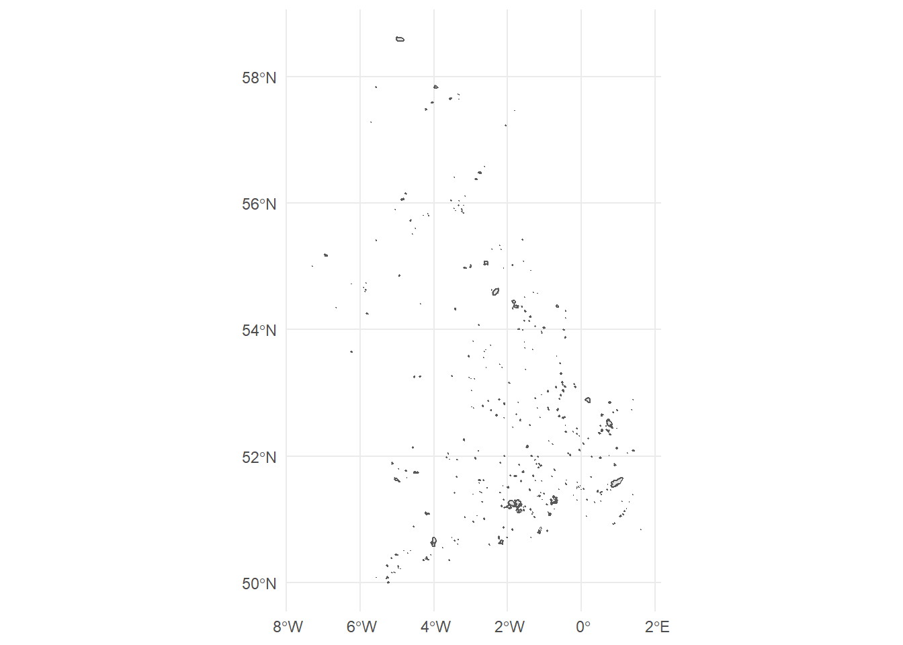

library(rnaturalearth)
library(sf)
library(ggplot2)
library(osmdata)
library(leaflet)
source("R/postgis.R")Military Sites from OSM
Geospatial Extent
United Kingdom
uk <- ne_countries(country = 'united kingdom') |>
st_as_sf()
(p1 <- ggplot(uk) +
geom_sf(alpha = 0.5) +
theme_minimal())
Bounding Box
(bbox_uk <- st_bbox(uk)) xmin ymin xmax ymax
-7.572168 49.960000 1.681531 58.635000 Extract Data from Open Street Map
If we try extracting for the whole country then the server will timeout.
We therefore chunk it into bounding boxes.
Generating Chunks
Create a grid over the uk
g <- st_make_grid(uk, what = "polygons", n = 10) |> st_as_sf()
g_clipped <- g[uk,]
p1 + geom_sf(data = g_clipped, inherit.aes = FALSE, fill = NA, colour = "black")
Extract the bounding boxes
bbox_g <- purrr::map(g_clipped$x, ~st_bbox(.x) |> as.numeric()) |>
unlist() |>
matrix(ncol = 4, byrow = TRUE) |>
dplyr::as_tibble() |>
rlang::set_names(c("xmin", "ymin", "xmax", "ymax"))Warning: The `x` argument of `as_tibble.matrix()` must have unique column names if `.name_repair` is omitted as of tibble 2.0.0.
Using compatibility `.name_repair`.
This warning is displayed once every 8 hours.
Call `lifecycle::last_lifecycle_warnings()` to see where this warning was generated.Extract Data
Loop through bounding box and extract open street map features with key = ‘landuse’ and value = ‘military’.
Landuse Military
landuse_military <- purrr::map(1:nrow(bbox_g), ~{
tryCatch({
opq(bbox = as.numeric(bbox_g[.x,])) |>
add_osm_feature(key = "landuse", value = "military") |>
osmdata_sf()
}, error = function(e) {
opq(bbox = as.numeric(bbox_g[.x,])) |>
add_osm_feature(key = "landuse", value = "military") |>
osmdata_sf()
}, finally = NA)
})
any(purrr::map_lgl(landuse_military, ~any(is.na(.x)))) # checkMilitary
military <- purrr::map(1:nrow(bbox_g), ~{
tryCatch({
opq(bbox = as.numeric(bbox_g[.x,])) |>
add_osm_feature(key = "military") |>
osmdata_sf()
}, error = function(e) {
opq(bbox = as.numeric(bbox_g[.x,])) |>
add_osm_feature(key = "military") |>
osmdata_sf()
}, finally = NA)
})
any(purrr::map_lgl(military, ~any(is.na(.x)))) # checkProcess Data
Extract the polygons from the osmdata object and combine.
landuse_military_polygons <- purrr::map_df(landuse_military, ~.x$osm_polygons)
military_polygons <- purrr::map_df(military, ~.x$osm_polygons)
military_sites <- dplyr::bind_rows(landuse_military_polygons, military_polygons)
military_sites <- military_sites |>
dplyr::mutate(area = st_area(geometry)) |>
dplyr::select(osm_id, name, landuse, military, operator, area, geometry)Upload to PostGIS
db <- connect_postgres()
sf::st_write(military_sites, dsn = db, layer = "military_sites")
DBI::dbDisconnect(db)Visualise
db <- connect_postgres()
military_sites <- sf::st_read(db, "military_sites")
military_sitesSimple feature collection with 3996 features and 6 fields
Geometry type: POLYGON
Dimension: XY
Bounding box: xmin: -7.551341 ymin: 49.98818 xmax: 1.679281 ymax: 58.62579
Geodetic CRS: WGS 84
First 10 features:
osm_id name
1 51138946 RAF St Mawgan
2 59039705 Predannack Airfield
3 65369074 Royal Naval Air Station Culdrose
4 152809464 Penhale Army Training Camp
5 158275409 <NA>
6 233857737 <NA>
7 332811670 Defence High Frequency Communications Service Penhale Sands
8 474353714 RRH Portreath
9 708211368 WW2 D-Day Embarkation Hard
10 871449414 <NA>
landuse military operator area geometry
1 military base Royal Air Force 1933453.821 POLYGON ((-5.007252 50.4436...
2 military airfield Royal Navy 3076337.947 POLYGON ((-5.229682 49.9904...
3 military airfield <NA> 2437861.464 POLYGON ((-5.243624 50.0875...
4 military <NA> <NA> 151262.075 POLYGON ((-5.149241 50.3852...
5 military airfield <NA> 1329005.075 POLYGON ((-5.272945 50.2721...
6 military base <NA> 182636.089 POLYGON ((-5.25791 50.08115...
7 military <NA> <NA> 241623.958 POLYGON ((-5.153838 50.3884...
8 military <NA> Royal Air Force 3083680.731 POLYGON ((-5.259148 50.2621...
9 military <NA> <NA> 2715.741 POLYGON ((-5.022318 50.2223...
10 military <NA> <NA> 9816.217 POLYGON ((-5.014535 50.4343...ggplot(military_sites) +
geom_sf() +
theme_minimal()
DBI::dbDisconnect(db)Summarise
military_sites |>
dplyr::as_tibble() |>
dplyr::group_by(landuse) |>
dplyr::summarise(n = dplyr::n(),
avg_area = mean(area)) |>
dplyr::arrange(dplyr::desc(n))# A tibble: 11 × 3
landuse n avg_area
<chr> <int> <dbl>
1 <NA> 2025 447095.
2 military 1946 1165873.
3 grass 7 560057.
4 residential 6 12073.
5 railway 4 24859.
6 brownfield 2 334744.
7 farmyard 2 32346.
8 commercial 1 4951.
9 greenfield 1 3432.
10 meadow 1 1811.
11 recreation_ground 1 1455.military_sites |>
dplyr::as_tibble() |>
dplyr::group_by( military) |>
dplyr::summarise(n = dplyr::n(),
avg_area = mean(area)) |>
dplyr::arrange(dplyr::desc(n))# A tibble: 45 × 3
military n avg_area
<chr> <int> <dbl>
1 bunker 1588 324.
2 <NA> 780 1556369.
3 barracks 602 78943.
4 range 311 1729360.
5 airfield 126 2371663.
6 danger_area 124 5459998.
7 office 95 1331.
8 training_area 75 2778772.
9 base 55 719514.
10 obstacle_course 46 4032.
# … with 35 more rows